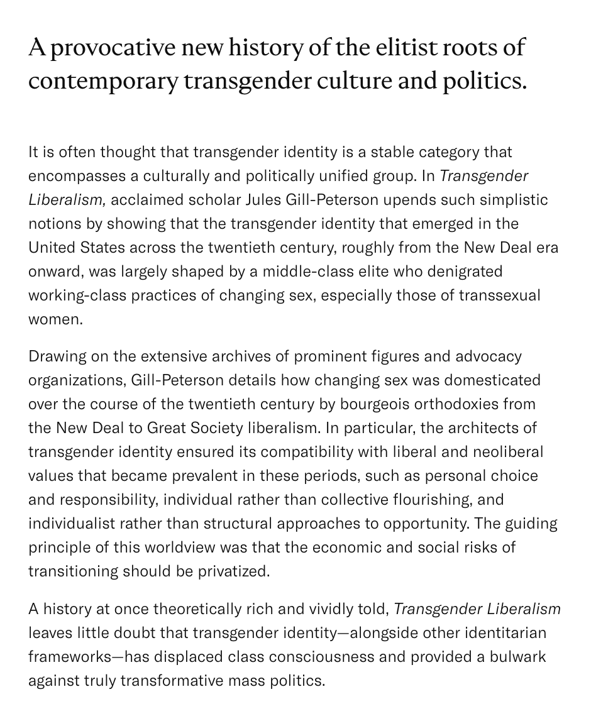

Was lucky enough to read a chapter manuscript from it and have to say it is one of the most daring and insightful treatises on trans history I’ve recently read (it also settles every argument concerning the transsexual/trans and tma/tme distinction that happens on this site). JGP tears down the entire post-1990s “transgender” movement (very explicitly led by theyfabs) by showing how its positioning of gender as a purely psychological category (private property) and its foregrounding of non-transitioning queer people engendered a middle-class politics that reworked gender nonconformity into a marker of taste/distinction, thereby becoming complicit with the neoliberal privatization of transitioning technologies and the marginalization of transsexuals. A must-read.
